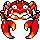
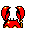

#098
Krabby
Water
Its pincers are not only powerful weapons, they are used for balance when walking sideways
Base stats Total 330
HP50
Attack85
Defense90
Speed50
Special55
Details
- Species
- River Crab
- Height
- 1'04"
- Weight
- 14.0 lb
- Catch rate
- 225
- Base exp
- 115
- Growth
- Medium Fast
Level-up moves
LevelMoveType
StartBubbleWater
StartLeerNormal
Lv 7HardenNormal
Lv 9Water GunWater
Lv 16VicegripNormal
Lv 20BubblebeamWater
Lv 24StompNormal
Lv 28CrabhammerWater
Lv 34Body SlamNormal
Evolution
Where to find
Any fishable waterOld RodLv 5
TM / HM
TM03 Swords DanceTM06 ToxicTM08 Body SlamTM09 Take DownTM10 Double-EdgeTM11 BubblebeamTM12 Water GunTM13 Ice BeamTM14 BlizzardTM16 Metal ClawTM28 DigTM31 MimicTM32 Double TeamTM34 BideTM44 RestTM48 Rock SlideTM50 SubstituteHM01 CutHM03 SurfHM04 Strength